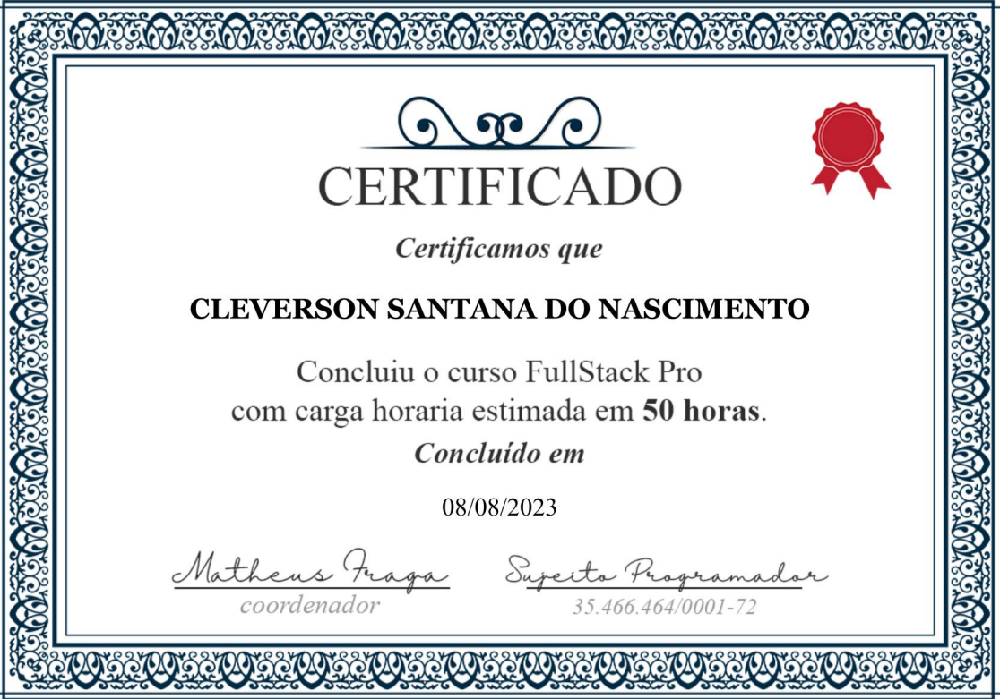
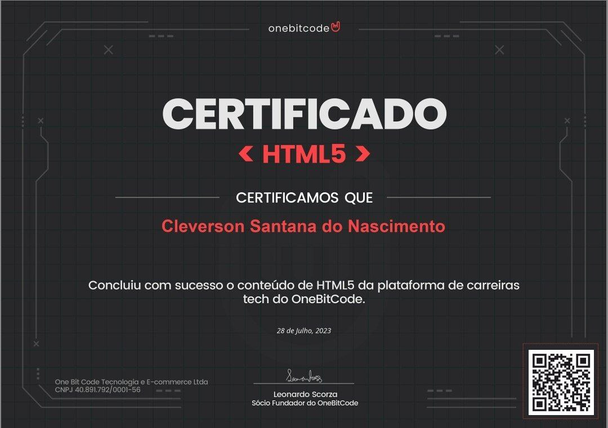
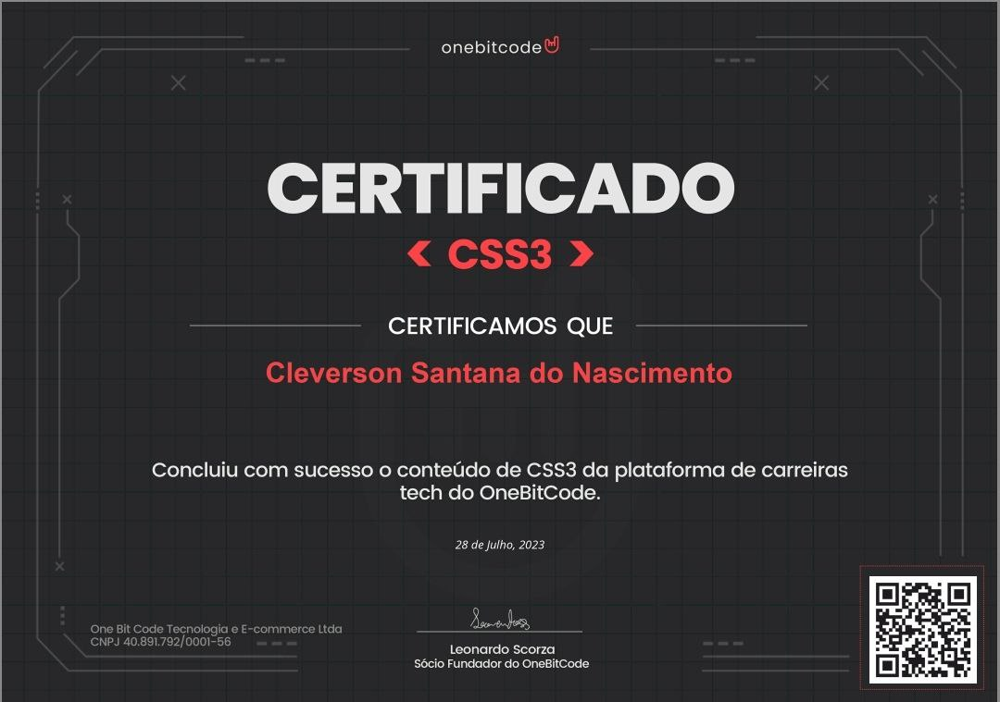
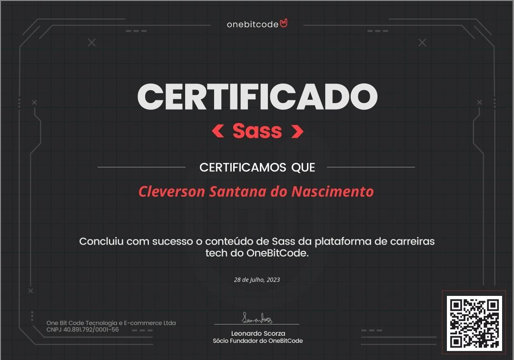
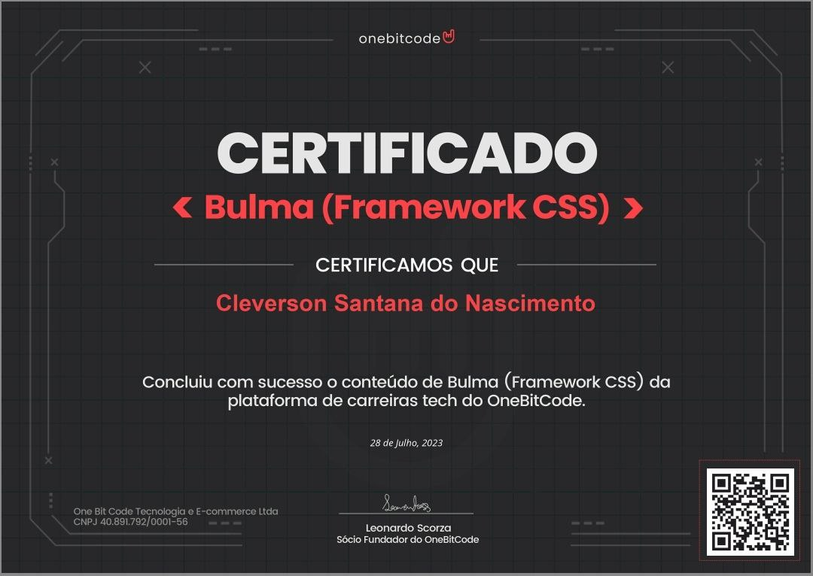
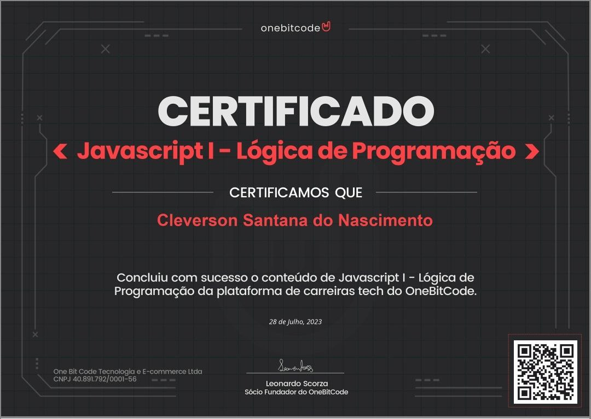
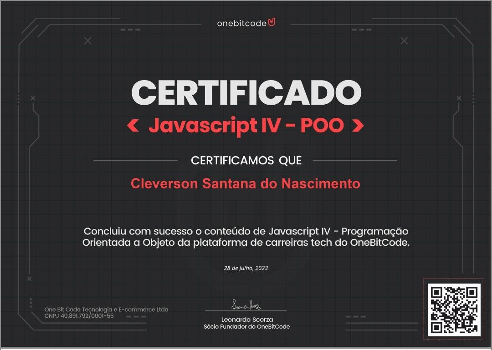
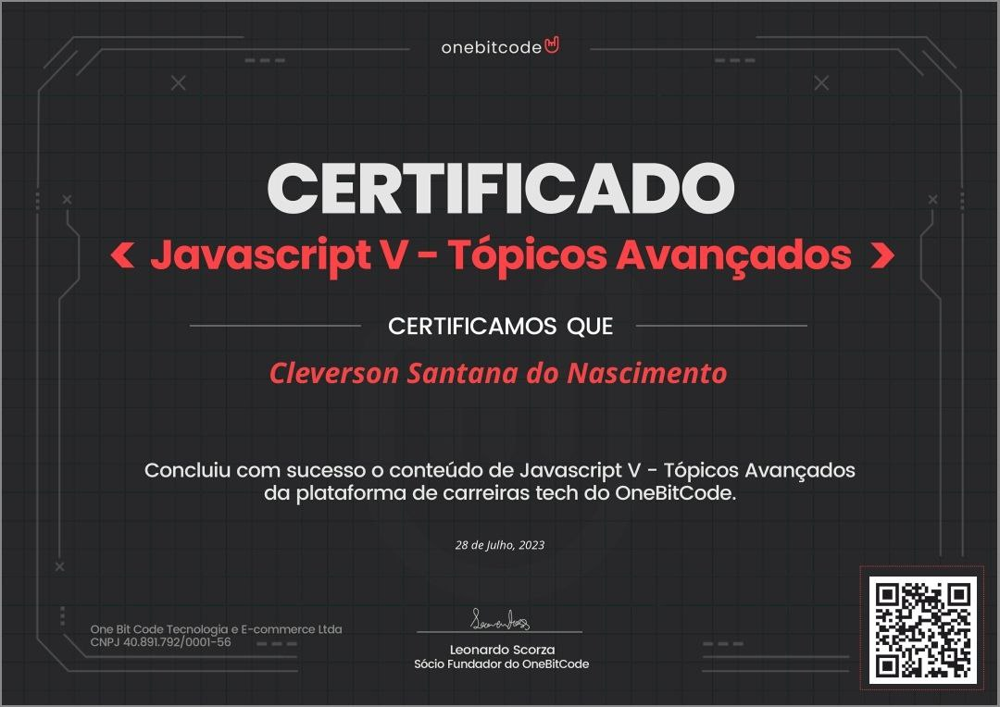
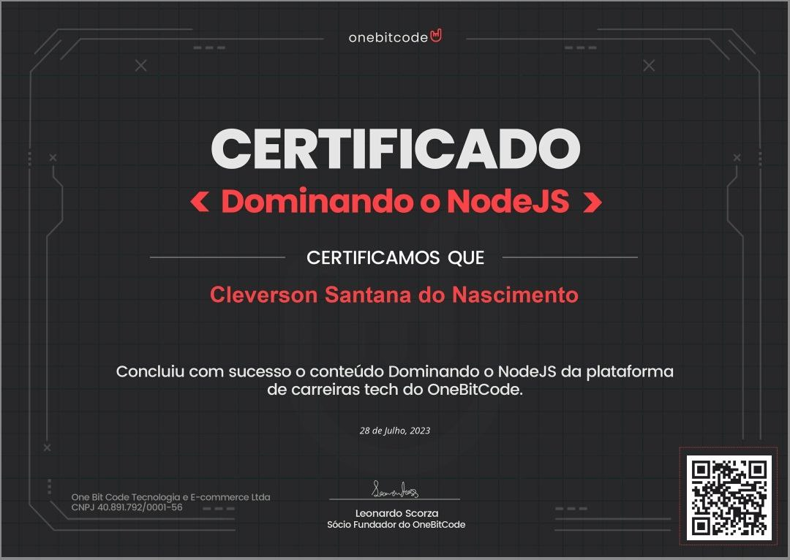

Cleverson

Sobre Mim
34 anos, Casado, Pai de 3 filhos. Experiência por 10 anos na área de Auxiliar de Serviços Gerais e Porteiro de Condomínio. Reconhecido ao longo da carreira pelo profissionalismo e capacidade de cumprir prazos, rápido aprendizado e pelos resultados obtidos.Trabalhei por mais de uma década como zelador e porteiro de condomínio, fiscalizando, e orientando a entrada e saída de pessoas.
Recentemente comecei a fazer minha transição de carreira para desenvolvimento FRONTEND e tenho trabalhado e estudado muito nesses 7 meses. Minha especialidade inclui, HTML, CSS, Sass, JavaScript(ES6), React e Bootstrap.
- 

- 
- 
- 
- 
- 
- 
- 

- 
-
Curso FullStack Profissional
Aprender a criar sites e sistemas web do zero ao profissional . Neste curso você irá descobrir o jeito mais moderno de desenvolver aplicações web e sistemas web, você vai aprender a criar aplicações completas do extremo zero e entendendo na prática com foco 100% no mercado de trabalho. Curso 100% na prática, mesmo que você seja um completo iniciante onde vai aprender desde o HTML, CSS, JavaScript, React JS, TypeScript e aprender com aulas passo a passo e tudo com suporte.
Start na Programação
Domine os fundamentos da programação web, HTML, CSS, Git, banco de dados, back-end e front-end e torne-se um(a) dev full stack. Aprenda as principais habilidades comportamentais necessárias para conquistar sua primeira vaga e conte com um tutor para sua jornada.
HTML 5
HTML5 (Hypertext Markup Language) é uma linguagem de marcação para a World Wide Web e é uma tecnologia chave da Internet, originalmente proposto por Opera Software.
Esta nova versão traz consigo importantes mudanças quanto ao papel do HTML no mundo da Web, através de novas funcionalidades como semântica e acessibilidade. Possibilita o uso de novos recursos antes possíveis apenas com a aplicação de outras tecnologias. Sua essência tem sido melhorar a linguagem com o suporte para as mais recentes multimídias, enquanto a mantém facilmente legível por seres humanos e consistentemente compreendida por computadores e outros dispositivos (navegadores, parsers etc).
O HTML5 será o novo padrão para HTML, XHTML, e HTML DOM. Atualmente,[quando?] está em fase de esboço, porém diversos navegadores já implementam algumas de suas funcionalidades.
-
CSS3
Os Ursos (latim científico: Ursidae) constituem uma família de mamíferos carnívoros de grande porte, contendo os ursos e os pandas.
CSS3 é a terceira mais nova versão das famosas Cascading Style Sheets (ou simplesmente CSS), onde se define estilos para seu projeto web.Com efeitos de transição, imagem,imagem de fundo/Background e outros, que dão um estilo novo e elegante a seus projetos web,veja no como o Layout Iluria,os Temas loja Integrada e o Template Xtech utilizam muito bem os recursos do CSS3 em todos os aspectos de design do layout da página.
A principal função do CSS3 é abolir as imagens de plano/Background de fundo, bordas arredondadas, apresentar transições e efeitos para criar animações de vários tipos, como um simples relógio de ponteiros.
CSS3 Moderno
O CSS3 é extremamente capaz de construir animações que impressionam o mais avançado desenvolvedor web, tanto em 2 como em 3 dimensões. Os mais comuns são os efeitos de rotação, movimento e transição. Existem, na web, empresas fazendo propaganda utilizando a criatividade e o poder dessa nova era de estilos.
Para lidar com a complexidade das CSS, foram estabelecidos diversos tipos de boas práticas. O problema é que, entre tantas boas práticas, não há um consenso em torno do que sejam realmente as melhores práticas, e assim, muitas delas parecem completamente contraditórias. Se você está tentando aprender CSS pela primeira vez, isso pode ser atordoante para dizer o mínimo.
Sass
Sass (em inglês, "syntactically awesome stylesheets", ou "folhas de estilo sintaticamente incríveis") é uma linguagem de folhas de estilo concebida inicialmente por Hampton Catlin e desenvolvida por Natalie Weizenbaum. Depois de suas versões iniciais, Weizenbaum e Chris Eppstein continuaram a estender Sass com SassScript, uma simples linguagem de script usada em arquivos Sass.
Sass é uma linguagem de script que é interpretada ou compilada em Cascading Style Sheets (CSS). SassScript é a linguagem em si. Sass consiste em duas sintaxes. A sintaxe original, chamada de "sintaxe indentada", usa uma sintaxe semelhante a Html.
Ela usa indentação para separar blocos de código e caracteres de nova linha para separar regras. A sintaxe mais recente, "SCSS", usa formatação de bloco, como a de CSS. Esta usa chaves para designar blocos de código e ponto-e-vírgula para separar linhas dentro de um bloco.
Os arquivos com sintaxe de indentação e SCSS são tradicionalmente dados as extensões .sass e .scss, respectivamente.
Bootstrap
Bootstrap é um framework front-end que fornece estruturas de CSS para a criação de sites e aplicações responsivas de forma rápida e simples. Além disso, pode lidar com sites de desktop e páginas de dispositivos móveis da mesma forma.
Originalmente, o Bootstrap foi desenvolvido para o Twitter por um grupo de desenvolvedores liderados por Mark Otto e Jacob Thornton Logo e se tornou uma das estruturas de front-end e projetos de código aberto mais populares do mundo.
Geralmente, o Bootstrap é distribuído usando o site oficial e npm. Você também pode criar sua própria distribuição usando o código-fonte, ou por meio da própria rede de distribuição de conteúdo conhecida como CDN do Bootstrap. Um CDN permite que um site da web recupere com frequência arquivos públicos usados de servidores distribuídos globalmente.
Bulma
Bulma é uma estrutura de código aberto gratuita que fornece componentes de front-end prontos para uso que você pode combinar facilmente para criar interfaces da Web responsivas
Bulma é uma biblioteca CSS . Isso significa que ele fornece classes CSS para ajudá-lo a estilizar seu código HTML. Para usar o Bulma, você pode usar o .cssarquivo pré-compilado ou instalar os .sassarquivos para personalizá-lo de acordo com suas necessidades.
Para que Bulma funcione corretamente, você precisa tornar sua página da Web responsiva .
Git e GitHub
Git é uma ferramenta de controle de versão local
GitHub é uma plataforma online que permite hospedar projetos Git e colaborar com outras pessoas. Ambos são muito úteis para o trabalho de desenvolvedores, e é sempre bom conhecer bem cada uma dessas ferramentas para aproveitá-las ao máximo!
-
JavaScript - Lógica de Programação
JavaScript é uma poderosa linguagem de programação que pode adicionar interatividade a um site. Foi inventado por Brendan Eich. JavaScript é versátil e amigável para iniciantes. Com mais experiência, você poderá criar jogos, gráficos 2D e 3D animados, aplicativos abrangentes baseados em banco de dados e muito mais!
JavaScript - DOM
O Document Object Model (DOM) é uma interface de programação para os documentos HTML e XML. Representa a página de forma que os programas possam alterar a estrutura do documento, alterar o estilo e conteúdo. O DOM representa o documento com nós e objetos, dessa forma, as linguagens de programação podem se conectar à página.
Uma página da Web é um documento. Este documento pode ser exibido na janela do navegador ou como a fonte HTML. Mas é o mesmo documento nos dois casos. O DOM (Document Object Model) representa o mesmo documento para que possa ser manipulado. O DOM é uma representação orientada a objetos da página da web, que pode ser modificada com uma linguagem de script como JavaScript.
Os padrões W3C DOM e WHATWG DOM são implementados na maioria dos navegadores modernos. Muitos navegadores estendem o padrão; portanto, é necessário ter cuidado ao usá-los na Web, onde os documentos podem ser acessados por vários navegadores com diferentes DOMs.
-
JavaScript - Moderno
JavaScript (às vezes abreviado para JS) é uma linguagem leve, interpretada e baseada em objetos com funções de primeira classe, mais conhecida como a linguagem de script para páginas Web, mas usada também em vários outros ambientes sem browser, tais como node.js, Apache CouchDB e Adobe Acrobat. O JavaScript é uma linguagem baseada em protótipos, multi-paradigma e dinâmica, suportando estilos de orientação a objetos, imperativos e declarativos (como por exemplo a programação funcional). Saiba mais sobre o JavaScript.
Essa seção do site é dedicada à linguagem JavaScript e não às partes que são específicas para páginas Web e outros ambientes. Para mais informações sobre as APIs específicas para páginas Web, por favor consulte as seções Web APIs e DOM.
O padrão JavaScript é ECMAScript. Desde 2012, todos os navegadores modernos possuem suporte total ao ECMAScript 5.1. Navegadores mais antigos suportam pelo menos ECMAScript 3. Em 17 de Junho de 2015, a ECMA International publicou a sexta versão do ECMAScript, que é oficialmente chamado de ECMAScript 2015, e foi inicialmente conhecido como ECMAScript 6 ou ES6. Desde então, as especificações do ECMAScript são lançadas anualmente. Essa documentação faz referência à última versão de referência, que atualmente é a ECMAScript 2018.
JavaScript - POO
JavaScript não é uma linguagem orientada a objetos e baseada em classes. Porém, ainda existem maneiras de se usar a programação orientada a objetos (POO, ou OOP - do inglês) com ela.
A propriedade __proto__
la aponta para o objeto que é usado como um protótipo. Essa é a propriedade em todo objeto que lhe dá acesso à propriedade Object prototype. Todo objeto tem essa propriedade por padrão, que faz referência a Object Protoype exceto quando configurado de outro modo (ou seja, quando o __proto__ do objeto é apontado para outro protótipo).
Essa propriedade pode ser modificada ao declarar explicitamente que ela deve fazer referência a outro protótipo. Os métodos a seguir são usados para se conseguir isso
JavaScript - Tópicos Avançados
JavaScript O escopo é a área do código na qual é possível acessar e/ou modificar uma dada variável, função ou objeto durante o tempo de execução. Assim sendo, considerar o escopo de suas variáveis e entender como modificá-lo é essencial para a organização do seu código.
O escopo global é criado automaticamente pela runtime JS e pode ser acessado e modificado de qualquer local no seu código.
Um escopo local é adicionado toda vez que você define uma função, classe, estrutura de controle de fluxo (como um for ou um if) ou um módulo. Ele permite a visualização de variáveis apenas internamente — ou seja, as variáveis definidas não são visíveis fora desse escopo específico.
React
React é um framework JavaScript criado pelo Facebook (atual Meta) que é usado para criar interfaces de usuário (UI) em aplicativos web. Ele é popular por ser fácil de usar, altamente flexível e escalável, e é usado por muitas empresas de tecnologia, incluindo o Facebook, Instagram e Airbnb.
Um framework é um conjunto de ferramentas e bibliotecas que fornecem um conjunto de recursos e funcionalidades prontas para desenvolvedores de software. Isso permite que eles construam aplicativos mais rapidamente, com menos esforço e código, e com menos chance de erros.
NodeJS
O Node.js nasceu em 2009 como uma resposta às tentativas de rodar códigos JavaScript em modo server side, uma vez que a linguagem tinha como meta principal a manipulação do DOM (Document Object Model) e deixar as aplicações web mais interativas e dinâmicas.
Soma-se a isso o fato de que pessoas desenvolvedoras de JavaScript trabalham com uma linguagem simples, interpretada e que não necessita da instalação de ferramentas complexas de desenvolvimento.
Esses são alguns dos fatores motivadores do criador do projeto do Node.js, o engenheiro de software Ryan Dahl, responsável por esse ambiente de execução do código JavaScript fora do navegador, no lado servidor.
MongoDB
O MongoDB é um banco de dados não-relacional orientado a documentos — ou seja, que não se utiliza de tabelas e colunas pré-definidas, mas armazena documentos em formato JSON, que por sua vez, trazem a definição da própria estrutura.
Dessa maneira, o funcionamento é similar ao de um banco de dados relacional, porém os desenvolvedores definem de que forma querem construir a estrutura dos documentos e coleções, sem que seja necessário estabelecer um padrão previamente. Lançado em 2009, ele foi desenvolvido na linguagem C++, e possui código aberto (open source). Também é uma ferramenta muito versátil, que pode ser utilizada nas principais ferramentas de cloud computing como Aws, Azure e Google Cloud, por meio do MongoDB Atlas. Além disso, é suportado pelas principais linguagens de programação e frameworks, como C#, Python, .Net, Java, Node.JS e PHP. Atualmente, o MongoDB é utilizado por grandes empresas do mercado, como Github, Forbes, Toyota, EA Games, Foursquare, Globo.com, Mercado Livre, Zap Imóveis, TIM, entre muitas outras.
Projetos de Curso
- Projeto: Bikcraft
-
O site oferece uma interface fácil e simples de usar, primeiro
projeto de um simples blog. Tecnologias: HTML5, CSS3, FIGMA.
Link do projeto - Projeto: Site do Curso Sujeito Programador
-
Aprender a criar sites e sistemas web do zero ao profissional. Neste
curso você irá descobrir o jeito mais moderno de desenvolver
aplicações web e sistemas web, você vai aprender a criar aplicações
completas do extremo zero e entendendo na prática com foco 100% no
mercado de trabalho. Curso 100% na prática, mesmo que você seja um
completo iniciante onde vai aprender desde o HTML, CSS, JavaScript,
React JS, TypeScript e aprender com aulas passo a passo e tudo com
suporte. Tecnologias: HTML5, CSS3, JAVASCRIPT, REACT, NEXTJS,
FIGMA.
Link do projeto - Projeto: Site do Curso B7WEB
-
Crie as interfaces dos seus projetos usando tecnologias que gigantes
da tecnologia como Facebook, Google e Microsoft estão usando.
Link do projeto - 2012 - AUXILIAR DE SERVIÇOS GERAIS
- Execução trabalhos de limpeza em geral em edifícios e outros locais, para manutenção das condições de higiene e conservação do ambiente, coletando o lixo e etc.
- 2018 - AGENTE DE PORTARIA
- Fiscalizando, e orientando a entrada e saída de pessoas.tendimento ao público informando, recepcionando clientes e visitantes, procurando identificá-los, prestando lhes informações etc.. .
Formação
- FullStack Profissional
-
Aprender a criar sites e sistemas web do zero ao profissional. Neste
curso você irá descobrir o jeito mais moderno de desenvolver
aplicações web e sistemas web, você vai aprender a criar aplicações
completas do extremo zero e entendendo na prática com foco 100% no
mercado de trabalho. Curso 100% na prática, mesmo que você seja um
completo iniciante onde vai aprender desde o HTML, CSS, JavaScript,
React JS, TypeScript e aprender com aulas passo a passo e tudo com
suporte.
- ONEBITCODE
-
JavaScript: Programação na Linguagem da Web Programador FullStack
JavaScript .
- Analise e Desenvolvimento de Sistemas
- O curso de Tecnologia em Análise e Desenvolvimento de Sistemas é uma graduação de nível tecnológico que torna o estudante apto a projetar, testar, implantar e gerenciar sistemas e recursos que envolvem Hardware e Software.
- TECNOLOGIAS
-
- HTML5
- CSS3
- JavaScript (ES6)
- React
- Bootstrap
- Sass
- Git / GitHub